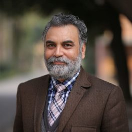
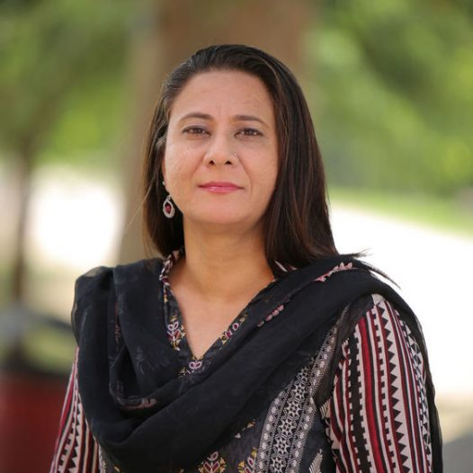
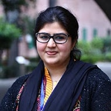
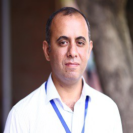

Our faculty
Professors
-

Dr Altaf Ullah Khan PROFESSOR AND DEAN OF HUMANITIES. Dr. Altaf Khan has a PhD from the Institute of KMW, University of Leipzig, Germany, as DAAD scholar (2004). He was Glidden Visiting Professor in Spring 2018 at Centre for International Journalism, Scripps School of Journalism, Ohio University, USA. Senior Visiting Fulbright faculty (post doctorate) at Centre for International Studies, Ohio University, USA in 2008-09. He has taught at the Department of Journalism & Mass Communication at University of Peshawar from 1990 to 2018. Masters in Journalism (Gold Medalist) from JMC, UoP.
-

Dr Nukhbah LangahASSOCIATE PROFESSOR OF ENGLISH DEPARTMENT.Dr Nukhbah Taj Langah studied MA in Colonial and Postcolonial Studies at the university of Warwick (1998) and completed her PhD from University of Leeds (2004-8). She joined FCCU in 2009 and is currently serving this institution in the capacity of Associate Professor of English and Dean of Humanities. In addition, she is a freelance translator and a political activist.
Department of Mass Communication
-

Anam Muzamill ASSISTANT PROFESSOR COORDINATOR OF ORIENTATION AND FORMAN EXPERIENCE. Taught Media Analysis as Visiting Faculty to MS program in 2013 at University of the Punjab, Teaching M Phil program at University of Central Punjab as visiting faculty; post-grad Research Supervisor; has been affiliated with FCCU since 2010. Currently pursuing PhD in crime programming and risk perception at Punjab University. Presented paper on Political Marketing at 6th ICESS 2015.
Department of Computer Science/h2>
-

Dr Aasia Khanum CHAIRPERSON & PROFESSOR.
14 years of teaching experience at prestigious post-graduate institutions of Pakistan, including NUST, IIEC, and Fatima Jinnah University; founding director of Emerging Technologies R&D Labs (ETL) and initiated several research proposals at NUST; served as Quality Assurance Officer (DCE) at College of E&ME (NUST) and focal person for quality certification of Computer Engineering programs from ISO 9001, HEC, and PEC; supervised over a dozen postgraduate theses and research; on review panel of several international conferences and journals; has published more than 40 papers in journals and conferences of international repute.
-

Muhammad Salman Chaudhry MS Electrical Engineering (LUMS, Lahore) MS Computer Engineering (NUST, Rawalpindi).
His focus of study and research was image processing at NUST, and embedded systems at LUMS. Has published research papers in the field of digital image processing in an internationally recognized journal. Has taught various courses since 2006 as full time faculty member related to Computer Science and Engineering in NUST, LUMS, University of Lahore and University of South Asia. Has also worked as an Electrical Engineer in Packages Ltd. Lahore prior to his teaching career.
Dr Aasia Khanum CHAIRPERSON & PROFESSOR. 14 years of teaching experience at prestigious post-graduate institutions of Pakistan, including NUST, IIEC, and Fatima Jinnah University; founding director of Emerging Technologies R&D Labs (ETL) and initiated several research proposals at NUST; served as Quality Assurance Officer (DCE) at College of E&ME (NUST) and focal person for quality certification of Computer Engineering programs from ISO 9001, HEC, and PEC; supervised over a dozen postgraduate theses and research; on review panel of several international conferences and journals; has published more than 40 papers in journals and conferences of international repute.
Muhammad Salman Chaudhry MS Electrical Engineering (LUMS, Lahore) MS Computer Engineering (NUST, Rawalpindi). His focus of study and research was image processing at NUST, and embedded systems at LUMS. Has published research papers in the field of digital image processing in an internationally recognized journal. Has taught various courses since 2006 as full time faculty member related to Computer Science and Engineering in NUST, LUMS, University of Lahore and University of South Asia. Has also worked as an Electrical Engineer in Packages Ltd. Lahore prior to his teaching career.